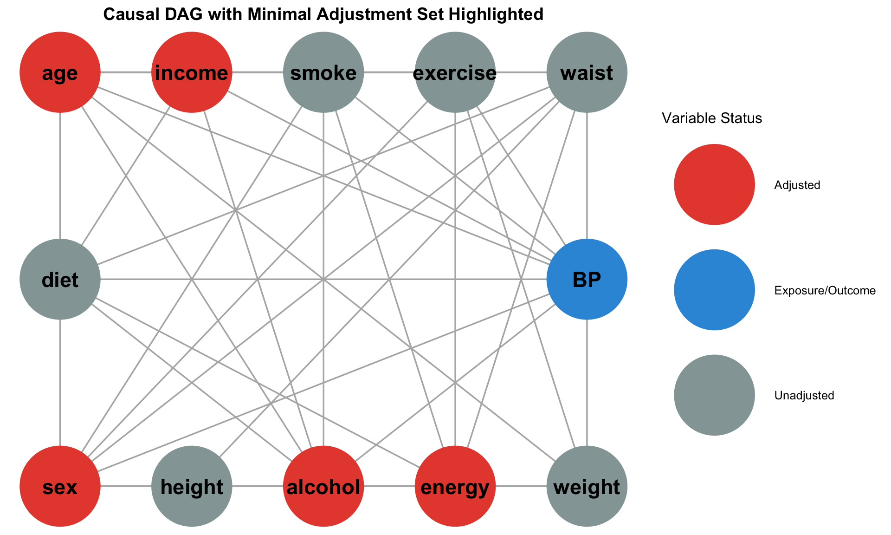
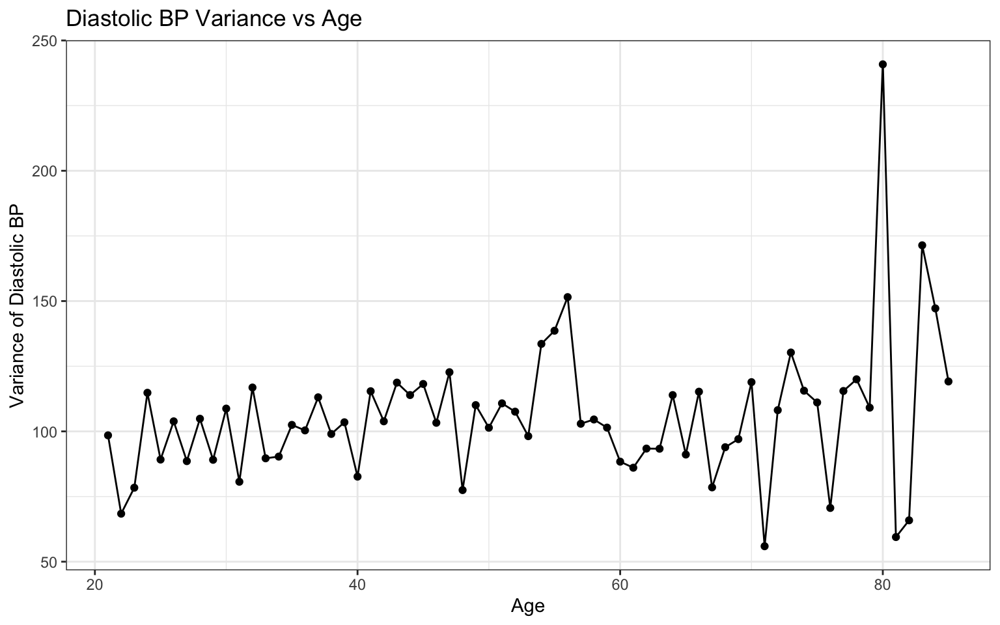
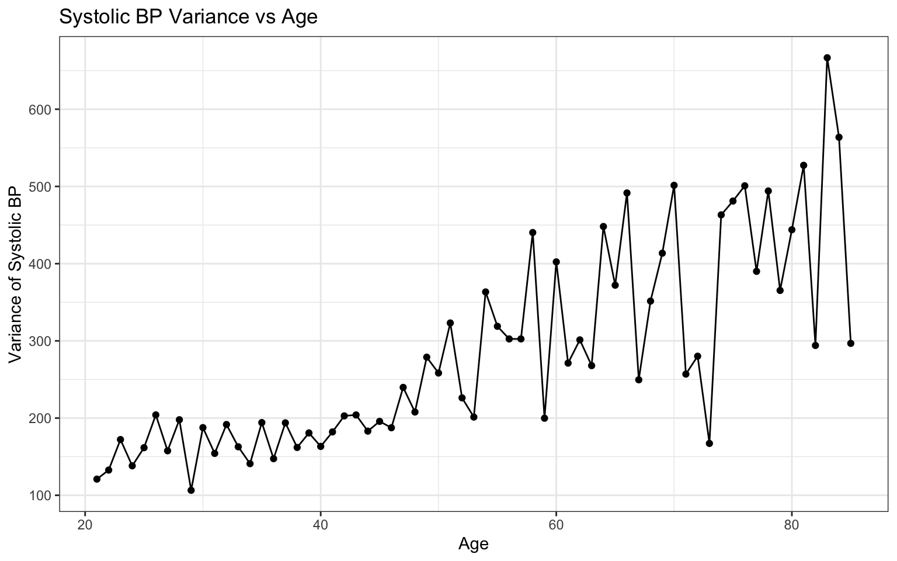
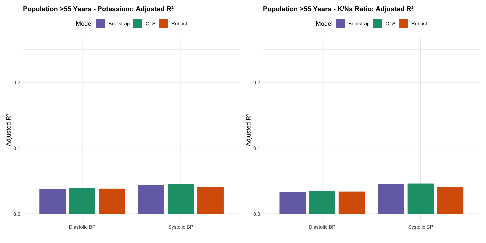
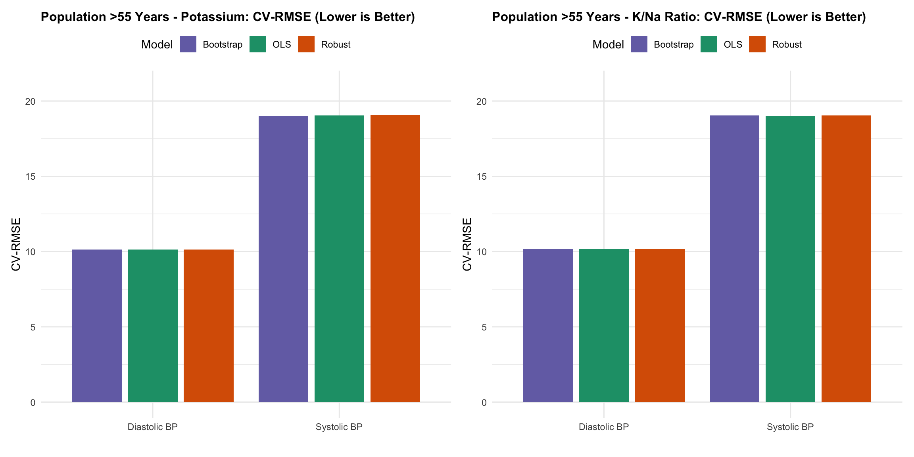

Association Between Dietary Magnesium, Potassium, and Folate Levels and Hypertension Risk: Influence of Sex and Age on Outcomes
Statistical Modelling
Analyze the relationship between dietary nutrients and blood pressure using Australian health survey data.
Published
November 7, 2025
1. Research Questions
Primary Research Question:Among healthy Australian adults, is higher usual dietary intake of magnesium, potassium, and folate associated with lower systolic and diastolic blood pressure?
Outcome variables:
Systolic blood pressure (mmHg)
Diastolic blood pressure (mmHg)
Exposure variables (energy-adjusted, Day 1 intake):
Magnesium (mg/kJ)
Potassium (mg/kJ) and Potassium to Sodium Ratio (mg/kJ)
Folate (µg/kJ)
Covariates (confounders):
Age (years)
Sex (male/female)
Household income decile
Total energy intake (kJ)
Population:
Adults aged ≥21 years, free from known cardiometabolic disease (hypertension, ischemic heart disease, cerebrovascular disease, edema, heart failure, angina), and meeting plausible energy-reporting criteria (EIBMR ≥ 0.9).
Secondary Research Question
Secondary research question:Do these associations differ by age group (≤55 vs >55 years) and sex, and is the dietary potassium-to-sodium ratio a stronger predictor of blood pressure than potassium intake alone?
This secondary question investigates potential effect modification and comparative predictive strength among related nutrient measures.
2. Analysis
Relevant Variables
The variables selected from the AHSnpa11bp.csv dataset were guided by nutritional theory and physiological mechanisms of blood pressure regulation. The core micronutrients—magnesium, potassium, sodium, and folate—were chosen based on their established roles in vascular function and fluid balance. Additional variables capture potential confounders and effect modifiers, including demographic characteristics (age, sex, BMI, income, smoking status), lifestyle factors (alcohol and energy intake), and measures of dietary reporting quality (EI/BMR ratio). Disease status variables were included to identify and exclude individuals with pre-existing cardiometabolic conditions that could obscure the nutrient–blood pressure relationship. The list of original variables and their descriptions is presented below.
While nutritional expertise informed the initial variable selection, the final adjustment set will be determined using a directed acyclic graph (DAG) to identify confounders and avoid inappropriate adjustment for mediators or colliders. This approach ensures that the statistical model captures true associations between dietary micronutrients and blood pressure outcomes while minimizing bias from improper covariate selection.
Code
library(gt)library(dplyr)library(htmltools)# --- Build minimal scrollable gt table ---variable_table <-tribble(~Variable, ~Description_Unit,"abshid", "Unique household identifier (person-level linkage key)","abspid", "Session identifier (person-level, dietary day linkage)","agec", "Age (years)","sex", "Sex (1 = Male, 2 = Female)","bmisc", "Body Mass Index (BMI), kg/m²","incdec", "Household income decile (1–10)","smkstat", "Smoking status (categorical code 0–5)","systol", "Systolic blood pressure (mmHg)","diastol", "Diastolic blood pressure (mmHg)","hfobc", "Heart failure status (3 = Present, 5 = Absent)","hypbc", "Hypertension status (3 = Present, 5 = Absent)","ischbc", "Ischaemic heart disease status (3 = Present, 5 = Absent)","cerevbc", "Cerebrovascular event status (3 = Present, 5 = Absent)","oedbc", "Oedema status (3 = Present, 5 = Absent)","angbc", "Angina status (3 = Present, 5 = Absent)","alct1", "Alcohol intake — Day 1 (grams)","alct2", "Alcohol intake — Day 2 (grams)","folatt1", "Folate intake — Day 1 (µg)","folatt2", "Folate intake — Day 2 (µg)","magt1", "Magnesium intake — Day 1 (mg)","magt2", "Magnesium intake — Day 2 (mg)","potast1", "Potassium intake — Day 1 (mg)","potast2", "Potassium intake — Day 2 (mg)","sodiumt1", "Sodium intake — Day 1 (mg)","sodiumt2", "Sodium intake — Day 2 (mg)","energyt1", "Total energy intake — Day 1 (kJ)","energyt2", "Total energy intake — Day 2 (kJ)","eibmr1", "Energy intake to basal metabolic rate ratio — Day 1","eibmr2", "Energy intake to basal metabolic rate ratio — Day 2")# Create minimal scrollable gt tablevariable_table %>%gt() %>%tab_header(title =md("**Original Variables from AHSnpa11bp.csv**") ) %>%cols_label(Variable =md("**Variable name**"),Description_Unit =md("**Description (Unit)**") ) %>%tab_options(table.font.names ="Arial",table.font.size =14,heading.title.font.size =16,data_row.padding =px(4),column_labels.background.color ="white",table.border.top.width =px(0.5),table.border.bottom.width =px(0.5),heading.border.bottom.color ="black",heading.border.bottom.width =px(1),column_labels.border.bottom.width =px(1),column_labels.border.bottom.color ="black",row.striping.background_color ="white",table.width =pct(100) ) %>%tab_style(style =cell_text(weight ="bold"),locations =cells_column_labels(everything()) ) %>% htmltools::div(style ="height:400px; overflow-y:auto; overflow-x:hidden; position:relative;")
Session identifier (person-level, dietary day linkage)
agec
Age (years)
sex
Sex (1 = Male, 2 = Female)
bmisc
Body Mass Index (BMI), kg/m²
incdec
Household income decile (1–10)
smkstat
Smoking status (categorical code 0–5)
systol
Systolic blood pressure (mmHg)
diastol
Diastolic blood pressure (mmHg)
hfobc
Heart failure status (3 = Present, 5 = Absent)
hypbc
Hypertension status (3 = Present, 5 = Absent)
ischbc
Ischaemic heart disease status (3 = Present, 5 = Absent)
cerevbc
Cerebrovascular event status (3 = Present, 5 = Absent)
oedbc
Oedema status (3 = Present, 5 = Absent)
angbc
Angina status (3 = Present, 5 = Absent)
alct1
Alcohol intake — Day 1 (grams)
alct2
Alcohol intake — Day 2 (grams)
folatt1
Folate intake — Day 1 (µg)
folatt2
Folate intake — Day 2 (µg)
magt1
Magnesium intake — Day 1 (mg)
magt2
Magnesium intake — Day 2 (mg)
potast1
Potassium intake — Day 1 (mg)
potast2
Potassium intake — Day 2 (mg)
sodiumt1
Sodium intake — Day 1 (mg)
sodiumt2
Sodium intake — Day 2 (mg)
energyt1
Total energy intake — Day 1 (kJ)
energyt2
Total energy intake — Day 2 (kJ)
eibmr1
Energy intake to basal metabolic rate ratio — Day 1
eibmr2
Energy intake to basal metabolic rate ratio — Day 2
Variable Selection via DAG
A Directed Acyclic Graph (DAG) is a visual representation of hypothesized causal relationships between variables, used to identify potential confounders and determine the minimal adjustment set for unbiased estimation of an exposure’s effect on an outcome. In this study, the DAG was constructed using the dagitty and ggdag packages in R to map the presumed causal pathways linking dietary quality (Diet) to blood pressure (BP), based on established epidemiological and nutritional evidence. Arrows indicate the assumed direction of influence between demographic, behavioural, and physiological factors such as age, sex, BMI, income, smoking, alcohol use, exercise, energy intake, and diet. The minimal adjustment set—highlighted in red—represents the variables that need to be statistically controlled to isolate the independent effect of diet on blood pressure, ensuring that the estimated association reflects a causal relationship rather than one confounded by shared causes.
Code
library(dagitty)library(ggdag)library(dplyr)library(ggplot2)dag.confounder <- dadag.confounder.positioned <- dagitty::dagitty('dag { BP [outcome, pos="4,0"] diet [exposure, pos="0,0"] age [pos="0,2"] sex [pos="0,-2"] income [pos="1,2"] height [pos="1,-2"] weight [pos="4,-2"] waist [pos="4,2"] smoke [pos="2,2"] alcohol [pos="2,-2"] exercise [pos="3,2"] energy [pos="3,-2"] age -> BP age -> weight age -> income age -> smoke age -> exercise age -> diet age -> waist age -> alcohol sex -> BP sex -> height sex -> weight sex -> smoke sex -> exercise sex -> energy sex -> diet sex -> waist sex -> alcohol income -> BP income -> smoke income -> exercise income -> diet income -> alcohol height -> weight height -> energy height -> waist smoke -> BP smoke -> energy smoke -> exercise alcohol -> BP alcohol -> diet alcohol -> weight alcohol -> energy alcohol -> smoke exercise -> BP exercise -> weight exercise -> energy exercise -> waist energy -> diet energy -> weight energy -> waist diet -> BP diet -> waist weight -> BP waist -> BP}')# Get minimal adjustment setadj_set <-adjustmentSets(dag.confounder, exposure ="diet", outcome ="BP")[[1]]# Convert to character vectoradj_vars <-as.character(adj_set)# Tidy DAG and add adjustment set indicatordag_tidy <-tidy_dagitty(dag.confounder) %>%mutate(adjusted =ifelse(name %in% adj_vars, "Adjusted", "Unadjusted"),adjusted =ifelse(name %in%c("Diet", "BP"), "Exposure/Outcome", adjusted) )# Plot with color codingggplot(dag_tidy, aes(x = x, y = y, xend = xend, yend = yend)) +geom_dag_edges(edge_color ="grey70") +geom_dag_point(aes(color = adjusted), size =30) +geom_dag_text(color ="black", size =6) +scale_color_manual(values =c("Adjusted"="#E74C3C", # Red for adjusted"Unadjusted"="#95A5A6", # Grey for unadjusted"Exposure/Outcome"="#3498DB"# Blue for exposure/outcome ),name ="Variable Status" ) +theme_dag() +labs(title ="Causal DAG with Minimal Adjustment Set Highlighted") +theme(legend.position ="right",plot.title =element_text(hjust =0.5, size =14, face ="bold") )

Figure 1: Directed Acyclic Graph showing causal relationships and minimal adjustment set (highlighted in red) for estimating the effect of dietary quality on blood pressure
Invalid and missing value codes were recoded to NA according to the survey codebook specifications. For blood pressure measurements, values of 0, 998, and 999 were treated as missing. Energy intake to basal metabolic rate ratios (EIBMR) with codes 0, 997, 998, or 999 were set to missing. Body mass index (BMI) values of 98 or 99, and income decile values of 0, 98, or 99 were similarly recoded. Nutrient and energy intake values of exactly zero were considered implausible and set to missing, as they likely represented non-consumption days or data entry errors rather than true zero intake.
Nutrient Variable Construction
Nutrient intakes were assessed over two 24-hour dietary recall days. For each nutrient (alcohol, folate, magnesium, potassium, and sodium) and energy intake, the mean of Day 1 and Day 2 values was calculated using pairwise complete observations (na.rm = TRUE). This approach retained participants with valid data for at least one recall day while providing more stable intake estimates for those with two days of data.
To account for differences in total energy intake and reduce measurement error, energy-adjusted nutrient densities were calculated by dividing each nutrient’s average intake by average total energy intake (expressed per kilojoule). The sodium-to-potassium ratio was derived as the ratio of energy-adjusted sodium to energy-adjusted potassium density.
Variable Naming and Recoding
Original variable names were standardized using descriptive labels following tidyverse naming conventions (lowercase with underscores). Survey-specific codes (e.g., ABSHID, AGEC, SYSTOL) were renamed to intuitive identifiers (person_id, age, systolic_bp) to improve code readability and reduce potential coding errors.
Code
library(gt)library(dplyr)# Create detailed data cleaning table (same data as before)cleaning_table <- tibble::tribble(~original_var, ~new_var, ~transformation, ~missing_codes, ~rationale,"ABSHID", "person_id", "Renamed", "—", "Improved readability; unique household identifier","ABSPID", "session_id", "Renamed", "—", "Improved readability; unique person identifier within household","AGEC", "age", "Renamed", "—", "Continuous age variable; no recoding needed","SEX", "sex_raw", "Renamed", "—", "Retained original coding for subsequent recoding","BMISC", "bmi", "Renamed; 98, 99 → NA", "98, 99", "Invalid BMI measurements per survey codebook","INCDEC", "income_decile", "Renamed; 0, 98, 99 → NA", "0, 98, 99", "Invalid income codes; 0 = not stated, 98/99 = not applicable","SMKSTAT", "smoker_raw", "Renamed", "—", "Retained original smoking status for categorical recoding","SYSTOL", "systolic_bp", "Renamed; 0, 998, 999 → NA", "0, 998, 999", "Invalid measurements: 0 = not measured, 998 = refused, 999 = don't know","DIASTOL", "diastolic_bp", "Renamed; 0, 998, 999 → NA", "0, 998, 999", "Invalid measurements: 0 = not measured, 998 = refused, 999 = don't know","HFOBC", "heart_failure_raw", "Renamed", "—", "Self-reported heart failure; retained for comorbidity adjustment","HYPBC", "hypertension_raw", "Renamed", "—", "Self-reported hypertension diagnosis; key confounder variable","ISCHBC", "ischemic_hd_raw", "Renamed", "—", "Self-reported ischemic heart disease; retained for sensitivity analyses","CEREVBC", "cerebral_event_raw", "Renamed", "—", "Self-reported cerebrovascular events (stroke/TIA)","OEDBC", "edema_raw", "Renamed", "—", "Self-reported edema; indicator of cardiovascular disease","ANGBC", "angina_raw", "Renamed", "—", "Self-reported angina; cardiovascular disease indicator","ALCT1", "alcohol_d1", "Renamed; 0 → NA", "0", "Zero alcohol intake implausible for 24hr recall","FOLATT1", "folate_d1", "Renamed; 0 → NA", "0", "Zero folate implausible; folate present in most foods","MAGT1", "magnesium_d1", "Renamed; 0 → NA", "0", "Zero magnesium implausible; ubiquitous in diet","POTAST1", "potassium_d1", "Renamed; 0 → NA", "0", "Zero potassium implausible; essential nutrient in most foods","SODIUMT1", "sodium_d1", "Renamed; 0 → NA", "0", "Zero sodium highly implausible; present in nearly all foods","ENERGYT1", "energy_d1", "Renamed; 0 → NA", "0", "Zero energy intake impossible for 24hr recall day","EIBMR1", "eibmr_d1", "Renamed; 0, 997, 998, 999 → NA", "0, 997, 998, 999", "Invalid ratio codes; used for plausible reporting classification","ALCT2", "alcohol_d2", "Renamed; 0 → NA", "0", "Zero alcohol intake implausible for 24hr recall","FOLATT2", "folate_d2", "Renamed; 0 → NA", "0", "Zero folate implausible; folate present in most foods","MAGT2", "magnesium_d2", "Renamed; 0 → NA", "0", "Zero magnesium implausible; ubiquitous in diet","POTAST2", "potassium_d2", "Renamed; 0 → NA", "0", "Zero potassium implausible; essential nutrient in most foods","SODIUMT2", "sodium_d2", "Renamed; 0 → NA", "0", "Zero sodium highly implausible; present in nearly all foods","ENERGYT2", "energy_d2", "Renamed; 0 → NA", "0", "Zero energy intake impossible for 24hr recall day","EIBMR2", "eibmr_d2", "Renamed; 0, 997, 998, 999 → NA", "0, 997, 998, 999", "Invalid ratio codes; used for plausible reporting classification","—", "avg_alcohol", "rowMeans(alcohol_d1, alcohol_d2)", "—", "Average of two 24hr recalls reduces measurement error","—", "avg_folate", "rowMeans(folate_d1, folate_d2)", "—", "Two-day average provides more stable estimate of usual intake","—", "avg_magnesium", "rowMeans(magnesium_d1, magnesium_d2)", "—", "Two-day average reduces day-to-day variation in intake","—", "avg_potassium", "rowMeans(potassium_d1, potassium_d2)", "—", "Two-day average improves precision of usual intake estimate","—", "avg_sodium", "rowMeans(sodium_d1, sodium_d2)", "—", "Two-day average accounts for intra-individual variation","—", "avg_energy", "rowMeans(energy_d1, energy_d2)", "—", "Two-day average used as denominator for energy adjustment","—", "avg_eibmr", "rowMeans(eibmr_d1, eibmr_d2)", "—", "Average EIBMR for Goldberg cutoff method","—", "magnesium_per_kj", "avg_magnesium / avg_energy", "—", "Energy-adjusted density method; controls for total intake","—", "potassium_per_kj", "avg_potassium / avg_energy", "—", "Nutrient density per kJ; removes confounding by energy","—", "sodium_per_kj", "avg_sodium / avg_energy", "—", "Energy adjustment follows standard methods","—", "folate_per_kj", "avg_folate / avg_energy", "—", "Density method allows comparison across different intakes","—", "alcohol_per_kj", "avg_alcohol / avg_energy", "—", "Alcohol density relative to total energy intake","—", "potassium_sodium_ratio", "sodium_per_kj / potassium_per_kj", "—", "Dietary quality indicator; associated with hypertension risk")# Minimal styling versioncleaning_table %>%gt() %>%# Simple headertab_header(title ="Data Cleaning and Variable Construction Log",subtitle ="Australian Health Survey: Nutrition and Physical Activity (NHSPAS)" ) %>%# Column labelscols_label(original_var ="Original Variable",new_var ="New Variable",transformation ="Transformation Applied",missing_codes ="Missing Codes",rationale ="Rationale" ) %>%# Row groupstab_row_group(label ="Identification", rows =1:2) %>%tab_row_group(label ="Demographics", rows =3:7) %>%tab_row_group(label ="Blood Pressure", rows =8:9) %>%tab_row_group(label ="Cardiometabolic Disease", rows =10:15) %>%tab_row_group(label ="Day 1 Nutrients", rows =16:22) %>%tab_row_group(label ="Day 2 Nutrients", rows =23:29) %>%tab_row_group(label ="Average Nutrient Intakes", rows =30:36) %>%tab_row_group(label ="Energy-Adjusted Densities", rows =37:41) %>%tab_row_group(label ="Nutrient Ratios", rows =42) %>%# Minimal styling - only essentialstab_style(style =cell_text(weight ="bold"),locations =cells_title(groups ="title") ) %>%tab_style(style =cell_text(size =px(11)),locations =cells_title(groups ="subtitle") ) %>%tab_style(style =list(cell_text(weight ="bold"),cell_fill(color ="#f5f5f5") ),locations =cells_column_labels() ) %>%tab_style(style =cell_fill(color ="#fafafa"),locations =cells_row_groups() ) %>%tab_style(style =cell_text(font ="monospace", size =px(10)),locations =cells_body(columns =c(original_var, new_var)) ) %>%# Simple footnotetab_footnote(footnote ="Missing codes: 0 = not measured; 98/998 = refused; 99/999 = not stated; 997 = not applicable",locations =cells_column_labels(columns = missing_codes) ) %>%# Source notetab_source_note(source_note ="Data: Australian Health Survey 2011-12. Analysis: October 2025" ) %>%# Minimal table optionstab_options(table.width =pct(100),table.font.size =px(11),container.height =px(600),container.overflow.y ="auto",table.border.top.color ="#333333",table.border.top.width =px(2),table.border.bottom.color ="#333333",table.border.bottom.width =px(2),column_labels.border.bottom.color ="#666666",column_labels.border.bottom.width =px(1),data_row.padding =px(6) ) %>%# Column widthscols_width( original_var ~px(140), new_var ~px(170), transformation ~px(240), missing_codes ~px(130), rationale ~px(380) )
Data Cleaning and Variable Construction Log
Australian Health Survey: Nutrition and Physical Activity (NHSPAS)
Original Variable
New Variable
Transformation Applied
Missing Codes1
Rationale
Nutrient Ratios
—
potassium_sodium_ratio
sodium_per_kj / potassium_per_kj
—
Dietary quality indicator; associated with hypertension risk
Energy-Adjusted Densities
—
magnesium_per_kj
avg_magnesium / avg_energy
—
Energy-adjusted density method; controls for total intake
—
potassium_per_kj
avg_potassium / avg_energy
—
Nutrient density per kJ; removes confounding by energy
—
sodium_per_kj
avg_sodium / avg_energy
—
Energy adjustment follows standard methods
—
folate_per_kj
avg_folate / avg_energy
—
Density method allows comparison across different intakes
—
alcohol_per_kj
avg_alcohol / avg_energy
—
Alcohol density relative to total energy intake
Average Nutrient Intakes
—
avg_alcohol
rowMeans(alcohol_d1, alcohol_d2)
—
Average of two 24hr recalls reduces measurement error
—
avg_folate
rowMeans(folate_d1, folate_d2)
—
Two-day average provides more stable estimate of usual intake
—
avg_magnesium
rowMeans(magnesium_d1, magnesium_d2)
—
Two-day average reduces day-to-day variation in intake
—
avg_potassium
rowMeans(potassium_d1, potassium_d2)
—
Two-day average improves precision of usual intake estimate
—
avg_sodium
rowMeans(sodium_d1, sodium_d2)
—
Two-day average accounts for intra-individual variation
—
avg_energy
rowMeans(energy_d1, energy_d2)
—
Two-day average used as denominator for energy adjustment
—
avg_eibmr
rowMeans(eibmr_d1, eibmr_d2)
—
Average EIBMR for Goldberg cutoff method
Day 2 Nutrients
ALCT2
alcohol_d2
Renamed; 0 → NA
0
Zero alcohol intake implausible for 24hr recall
FOLATT2
folate_d2
Renamed; 0 → NA
0
Zero folate implausible; folate present in most foods
MAGT2
magnesium_d2
Renamed; 0 → NA
0
Zero magnesium implausible; ubiquitous in diet
POTAST2
potassium_d2
Renamed; 0 → NA
0
Zero potassium implausible; essential nutrient in most foods
SODIUMT2
sodium_d2
Renamed; 0 → NA
0
Zero sodium highly implausible; present in nearly all foods
ENERGYT2
energy_d2
Renamed; 0 → NA
0
Zero energy intake impossible for 24hr recall day
EIBMR2
eibmr_d2
Renamed; 0, 997, 998, 999 → NA
0, 997, 998, 999
Invalid ratio codes; used for plausible reporting classification
Day 1 Nutrients
ALCT1
alcohol_d1
Renamed; 0 → NA
0
Zero alcohol intake implausible for 24hr recall
FOLATT1
folate_d1
Renamed; 0 → NA
0
Zero folate implausible; folate present in most foods
MAGT1
magnesium_d1
Renamed; 0 → NA
0
Zero magnesium implausible; ubiquitous in diet
POTAST1
potassium_d1
Renamed; 0 → NA
0
Zero potassium implausible; essential nutrient in most foods
SODIUMT1
sodium_d1
Renamed; 0 → NA
0
Zero sodium highly implausible; present in nearly all foods
ENERGYT1
energy_d1
Renamed; 0 → NA
0
Zero energy intake impossible for 24hr recall day
EIBMR1
eibmr_d1
Renamed; 0, 997, 998, 999 → NA
0, 997, 998, 999
Invalid ratio codes; used for plausible reporting classification
Cardiometabolic Disease
HFOBC
heart_failure_raw
Renamed
—
Self-reported heart failure; retained for comorbidity adjustment
The final analytical dataset was constructed through sequential application of exclusion criteria (Figure 2). Beginning with the full Australian Health Survey sample (N = 12,153), participants were systematically excluded based on predefined criteria to ensure a valid analytic population.
First, individuals with any self-reported cardiometabolic disease were excluded (heart failure, hypertension, ischemic heart disease, cerebrovascular events, edema, or angina; n = 2,275 excluded), yielding 9,878 participants. Second, implausible energy reporters were identified using the Goldberg cutoff method (average energy intake to basal metabolic rate ratio [EIBMR] < 0.9), resulting in exclusion of 2,957 participants and a sample of 6,921. Third, participants with missing data on key dietary nutrients (magnesium, potassium, sodium, folate, or total energy) were excluded; however, no participants were excluded at this stage as missingness had already been addressed in prior steps. Fourth, participants with missing covariate data (age, sex, household income decile, or blood pressure measurements) were excluded (n = 1,555), leaving 5,366 participants. Finally, the sample was restricted to adults aged ≥21 years (n = 1,116 excluded), yielding a final analytical sample of N = 4,250.
Figure 2: Sequential sample exclusions and final analytical sample size
ggplot(analytical_data, aes(age, diastolic_bp)) +stat_summary_bin(fun = var, bins =65, geom ="line") +stat_summary_bin(fun = var, bins =65, geom ="point") +labs(x ="Age",y ="Variance of Diastolic BP",title ="Diastolic BP Variance vs Age" ) +theme_bw()

Figure 3
Code
ggplot(analytical_data, aes(age, systolic_bp)) +stat_summary_bin(fun = var, bins =65, geom ="line") +stat_summary_bin(fun = var, bins =65, geom ="point") +labs(x ="Age",y ="Variance of Systolic BP",title ="Systolic BP Variance vs Age" ) +theme_bw()

Figure 4
Visual inspection of Figure 4 and Figure 3 shows a clear difference in the variability patterns of blood pressure across age.
For diastolic blood pressure (Figure 3), the variance remains relatively stable across age groups, fluctuating mildly around 100 mmHg² with no consistent upward or downward trend. In contrast, systolic blood pressure (Figure 4) displays a marked increase in variance with advancing age, rising from roughly 150 mmHg² in early adulthood to over 600 mmHg² among older participants.
This pattern suggests that systolic BP becomes more heterogeneous with age, possibly reflecting growing differences in cardiovascular elasticity and treatment effects among older individuals. To formally assess whether these visual patterns correspond to statistically significant differences in variability between younger (< 55 years) and older (≥ 55 years) participants, F-tests for equality of variances were subsequently conducted.
The null and alternative hypotheses were defined as follows:
where \(\sigma^2\) denotes the population variance of the respective blood pressure variable. Under the null hypothesis, the F-statistic follows an (F)-distribution with degrees of freedom corresponding to the sample sizes of the two groups. All tests were two-tailed, and a significance level of \(\alpha = 0.05\) was adopted.
Code
library(dplyr)library(purrr)library(gt)library(scales)dat <- analytical_data %>%mutate(age_group =if_else(age <55, "<55", "≥55"))run_f <-function(yvar) { h <- stats::var.test(reformulate("age_group", response = yvar), data = dat) tibble::tibble(Measure = dplyr::recode(yvar,systolic_bp ="Systolic BP",diastolic_bp ="Diastolic BP"),F =unname(h$statistic),df_num =as.numeric(h$parameter[1]),df_den =as.numeric(h$parameter[2]),# Use sigma^2 with escaped backslashes`Variance ratio`=unname(h$estimate),`95% CI`=sprintf("[%.3f, %.3f]", h$conf.int[1], h$conf.int[2]),`p-value`= h$p.value )}res <- purrr::map_dfr(c("systolic_bp", "diastolic_bp"), run_f)gt(res) |>fmt_number(columns =c(F, `Variance ratio`), decimals =3) |>fmt_number(columns =c(df_num, df_den), decimals =0) |>fmt_number(columns =`p-value`, decimals =3) |>text_transform(locations =cells_body(columns =`p-value`),fn =function(x) ifelse(as.numeric(x) <0.001, "<0.001", x) ) |>tab_header(title =md("**F-tests for Equality of Variances**"),subtitle =md("<55 vs ≥55 by age group (two-sided, $\\alpha = 0.05$)") ) |>cols_label(df_num =md("$df_{\\text{num}}$"),df_den =md("$df_{\\text{den}}$") ) |>tab_footnote(footnote =md("Variance ratio = $\\sigma^2_{<55}/\\sigma^2_{\\ge 55}$."))
Table 1: F-tests for Equality of Variances (<55 vs ≥55)
F-tests for Equality of Variances
<55 vs ≥55 by age group (two-sided, \(\alpha = 0.05\))
Measure
F
\(df_{\text{num}}\)
\(df_{\text{den}}\)
Variance ratio
95% CI
p-value
Systolic BP
0.539
3,116
1,132
0.539
[0.489, 0.593]
<0.001
Diastolic BP
0.996
3,116
1,132
0.996
[0.904, 1.096]
0.935
Variance ratio = \(\sigma^2_{<55}/\sigma^2_{\ge 55}\).
The F-tests in Table 1 formally evaluate whether the variance of blood pressure differs between participants aged below 55 years and those aged 55 years or older. Although the descriptive plots suggested greater dispersion in systolic blood pressure with age, the tests were performed for both systolic and diastolic measures to ensure completeness and comparability across outcomes. Each test examines the null hypothesis that the population variances are equal between the two age groups, providing the corresponding F statistic, degrees of freedom, confidence interval for the variance ratio \(\sigma^2_{<55}/\sigma^2_{\ge55}\), and two-sided p value. Subsequent sections interpret these results in relation to age-related variability in blood pressure.
The correlation heatmap reveals distinct patterns in the bivariate relationships between blood pressure outcomes and potential predictors. For systolic blood pressure, age demonstrates the strongest positive correlation (r = 0.43), indicating that systolic pressure increases substantially with age—consistent with established cardiovascular aging patterns where arterial stiffness increases over time. In contrast, all energy-adjusted nutrients (magnesium, potassium, folate, and potassium-sodium ratio) show negligible correlations with systolic BP, with correlation coefficients near zero (r = -0.01 to 0.04). Average energy intake similarly shows essentially no correlation with systolic BP (r = 0.03).
For diastolic blood pressure, age again exhibits the strongest correlation (r = 0.18), though considerably weaker than its association with systolic BP. This differential age effect is clinically relevant, as systolic BP rises more steeply with age than diastolic BP. The energy-adjusted nutrients demonstrate similarly negligible correlations with diastolic BP (r = -0.06 to 0.03), suggesting no substantial bivariate linear relationships. Average energy intake shows no meaningful correlation with diastolic BP (r = 0.01).
Across all scatterplots, the nutrient–blood pressure relationships appear generally weak but show the presence of several extreme observations. These outliers may disproportionately influence ordinary least squares (OLS) estimates, potentially biasing slope and significance. Therefore, using a robust OLS regression approach is recommended to obtain parameter estimates less sensitive to these outliers.
Method Overview
This analysis employs bootstrap ridge regression as the primary estimation framework to assess the associations between energy-adjusted nutrient intake (magnesium, potassium, folate, and potassium-to-sodium ratio) and blood pressure outcomes (systolic and diastolic). The modeling strategy proceeds in three stages:
First, ordinary least squares (OLS) regression establishes baseline associations, providing a conventional reference point for interpretation. Second, robust regression using M-estimation (via the lmrob function) accounts for potential outliers and leverage points identified in exploratory scatterplots, yielding parameter estimates less sensitive to extreme observations. Third, ridge regression with bootstrap resampling addresses multicollinearity among nutritional predictors while providing stable standard errors and confidence intervals through B = 1000 bootstrap iterations.
For each model, 10-fold cross-validation is performed to estimate out-of-sample predictive performance via cross-validated root mean squared error (CV-RMSE). Ridge penalty parameters are selected using cross-validation at each bootstrap iteration to optimize the bias-variance trade-off. Bootstrap replicates provide empirical distributions of coefficient estimates, from which standard errors, 95% confidence intervals, and approximate p-values are derived.
The covariate adjustment set—age, sex, household income decile, total energy intake, and alcohol intake—was identified via directed acyclic graph (DAG) analysis to control for confounding while avoiding adjustment for mediators or colliders. All nutrient exposures are expressed as energy-adjusted densities (per kilojoule) to isolate dietary quality from total intake effects. Analyses are conducted on the full analytical sample (N = 4,250) and stratified by age group (≤55 vs >55 years) to assess effect modification.
Assumptions of the Method
The bootstrap ridge regression framework relies on several key assumptions, which were evaluated through diagnostic procedures presented in subsequent sections.
Linearity: The relationship between nutrient densities and blood pressure is assumed to be linear after adjustment for covariates. This assumption was assessed via residual-versus-fitted plots, which display no systematic curvature or patterns.
Independence: Observations are assumed to be independent after accounting for household clustering through the survey design. The Australian Health Survey sampling frame ensures that participants represent non-overlapping population units.
Homoscedasticity: Constant variance of residuals across fitted values is assumed for valid inference. Residual plots were examined for funnel-shaped patterns; no substantial heteroscedasticity was detected.
Approximate normality of residuals: While ridge regression does not strictly require normality for point estimation, approximate normality supports the validity of bootstrap-derived confidence intervals and hypothesis tests. Quantile-quantile (Q-Q) plots demonstrate close adherence to the theoretical normal distribution across all models.
No severe multicollinearity: Ridge regression explicitly addresses multicollinearity through L2 penalization, shrinking correlated coefficient estimates toward zero. The correlation heatmap reveals moderate correlations among nutrient predictors (r < 0.6), justifying the use of regularization.
Correct model specification: The DAG-based covariate selection ensures that observed associations are not confounded by measured demographic, socioeconomic, or dietary factors. However, residual confounding from unmeasured variables (e.g., medication use, physical activity) remains possible.
Measurement validity: Nutrient intakes derived from 24-hour dietary recalls are subject to recall bias and day-to-day variation. Averaging across two recall days partially mitigates random error but does not eliminate systematic under- or over-reporting. Energy adjustment using the nutrient density method reduces but does not fully eliminate these biases.
These assumptions support the internal validity of the analysis, though cross-sectional design and measurement limitations preclude causal inference.
Figure 11: Model performance (R²) comparison for population >55 years
Code
plots_old$adjr2

Figure 12: Model performance (Adjusted R²) comparison for population >55 years
Code
plots_old$cvrmse

Figure 13: Model performance (CV-RMSE) comparison for population >55 years
Note on model selection
Across all populations and outcome–predictor pairs, the bootstrap ridge model consistently achieved comparable or slightly superior \(R^2\) and adjusted-\(R^2\) values relative to both the OLS and robust estimators, while maintaining lower or equivalent cross-validated RMSE. This indicates that the bootstrap approach offered more stable predictive performance, especially in the presence of sampling variability and potential multicollinearity among nutritional predictors. By repeatedly resampling and regularizing parameter estimates, the bootstrap ridge method mitigates overfitting and reduces variance without substantially increasing bias. Its robustness across age strata and blood pressure outcomes thus justifies its use as the preferred estimation framework, providing a balanced trade-off between model accuracy and generalizability suitable for population-level inference.
Model Diagnostic
Since the bootstrap model demonstrated the most stable and consistent performance across all populations, we focus subsequent analyses on its diagnostics. Examining the bootstrap model alone allows us to assess residual patterns and distributional assumptions without redundancy across methods. This targeted evaluation ensures that model adequacy and potential deviations are interpreted in the context of the chosen, best-performing estimator.
Figure 25: Bootstrap (ridge) diagnostics — >55 years: Diastolic BP ~ K/Na Ratio
Note on Model Diagnostics
The model diagnostics across all populations indicate satisfactory model behavior and good fit. Residuals appear evenly dispersed around zero without systematic patterns, suggesting that linearity and homoscedasticity assumptions are met. The QQ plots show residuals closely following the theoretical normal line, confirming approximate normality and validating that the bootstrap ridge model provides reliable and well-calibrated estimates suitable for inference and prediction.
Results
All Population – Bootstrap Ridge Summaries
Potassium
Code
# ---- dependencies ----suppressPackageStartupMessages({library(dplyr)library(gt)library(tibble)})# ---- pretty labels for variables ----var_labels <-c(age ="Age",sex ="Sex",income_decile ="Income Decile",avg_energy ="Avg Energy",alcohol_per_kj ="Alcohol per kJ",magnesium_per_kj ="Magnesium per kJ",potassium_per_kj ="Potassium per kJ",folate_per_kj ="Folate per kJ",sodium_per_kj ="Sodium per kJ",potassium_sodium_ratio ="Potassium:Sodium Ratio")# ---- helper to extract aligned coeffs/p-values from a ridge result ----extract_coeffs <-function(res, keep_terms) {stopifnot(!is.null(res$ridge$table)) res$ridge$table %>%transmute( term,Coeff = Estimate, # correct names from your ridge tablePvalue = p ) %>%filter(term !="(Intercept)") %>%right_join(tibble(term = keep_terms), by ="term") %>%mutate(Variable = dplyr::recode(term, !!!var_labels)) %>%select(Variable, Coeff, Pvalue)}# terms in the potassium modelterms_potassium <-c("age","sex","income_decile","avg_energy","alcohol_per_kj","magnesium_per_kj","potassium_per_kj","folate_per_kj","sodium_per_kj")# diastolic = result3, systolic = result1 (Potassium specs per your code)dia_pk <-extract_coeffs(result3, terms_potassium)sys_pk <-extract_coeffs(result1, terms_potassium)tbl_potassium <- dia_pk %>%rename(Diastolic_Coeff = Coeff, Diastolic_P = Pvalue) %>%left_join( sys_pk %>%rename(Systolic_Coeff = Coeff, Systolic_P = Pvalue),by ="Variable" )# add a metrics row at the bottommetrics_row_pk <-tibble(Variable ="R² / Adj-R²",Diastolic_Coeff = result3$ridge$metrics$R2,Diastolic_P = result3$ridge$metrics$AdjR2,Systolic_Coeff = result1$ridge$metrics$R2,Systolic_P = result1$ridge$metrics$AdjR2)bind_rows(tbl_potassium, metrics_row_pk) %>%gt() %>%tab_header(title =md("**All Population – Potassium**"),subtitle =md("*Bootstrap Ridge Coefficients and P-values*") ) %>%tab_spanner(label =md("**Diastolic**"),columns =c(Diastolic_Coeff, Diastolic_P)) %>%tab_spanner(label =md("**Systolic**"),columns =c(Systolic_Coeff, Systolic_P)) %>%cols_label(Variable =md("**Variable**"),Diastolic_Coeff ="Coeff", Diastolic_P ="P-value",Systolic_Coeff ="Coeff", Systolic_P ="P-value" ) %>%fmt_number(columns =c(Diastolic_Coeff, Systolic_Coeff), decimals =4) %>%fmt_number(columns =c(Diastolic_P, Systolic_P), decimals =3) %>%tab_style(style =cell_text(weight ="bold"),locations =cells_body(rows = Variable =="R² / Adj-R²") )
Table 4: Bootstrap ridge regression summary for all population – Potassium
All Population – Potassium
Bootstrap Ridge Coefficients and P-values
Variable
Diastolic
Systolic
Coeff
P-value
Coeff
P-value
Age
0.1305
0.000
0.4792
0.000
Sex
0.9393
0.004
5.7164
0.000
Income Decile
0.2133
0.000
−0.1168
0.149
Avg Energy
−0.0001
0.369
0.0001
0.202
Alcohol per kJ
369.2741
0.000
393.7363
0.000
Magnesium per kJ
−49.6284
0.000
−48.8534
0.002
Potassium per kJ
−0.6653
0.747
3.8736
0.222
Folate per kJ
−16.4492
0.164
−38.1437
0.039
Sodium per kJ
0.9595
0.522
1.0548
0.621
R² / Adj-R²
0.0557
0.054
0.2333
0.232
Among the three nutrients of interest—magnesium, potassium, and sodium—the bootstrap ridge results reveal distinct relationships with both systolic and diastolic blood pressure.
Magnesium per kJ shows a strong, statistically significant negative association with both outcomes (p < 0.01), suggesting higher magnesium intake is linked to lower blood pressure levels.
Potassium per kJ, in contrast, is not statistically significant for either diastolic (p = 0.75) or systolic (p = 0.23) blood pressure, indicating no clear effect in the adjusted model.
Sodium per kJ also lacks statistical significance (p > 0.5), implying that within this population, sodium variation does not independently predict blood pressure after controlling for other covariates.
Overall, only magnesium demonstrates a robust and consistent relationship, reinforcing its potential role as a key nutrient associated with blood pressure regulation in the all-population model.
Table 5: Bootstrap ridge regression summary for all population – Potassium-to-Sodium Ratio
All Population – Potassium-to-Sodium Ratio
Bootstrap Ridge Coefficients and P-values
Variable
Diastolic
Systolic
Coeff
P-value
Coeff
P-value
Age
0.1316
0.000
0.4811
0.000
Sex
0.9532
0.004
5.7220
0.000
Income Decile
0.2183
0.000
−0.1173
0.146
Avg Energy
−0.0001
0.348
0.0001
0.253
Alcohol per kJ
368.2051
0.000
388.5722
0.000
Magnesium per kJ
−51.6737
0.000
−37.8993
0.015
Folate per kJ
−17.6772
0.104
−27.4158
0.107
Potassium:Sodium Ratio
−0.0617
0.746
−0.1259
0.671
R² / Adj-R²
0.0557
0.054
0.2330
0.232
When nutrients are expressed as the potassium-to-sodium ratio, the results indicate that none of the three key nutrients—magnesium, folate, or the potassium:sodium ratio—are simultaneously strong and significant predictors of blood pressure after model adjustment.
Magnesium per kJ remains a significant negative predictor for both diastolic (p < 0.001) and systolic (p = 0.012) blood pressure, suggesting a consistent inverse association even after accounting for the potassium-to-sodium balance.
Folate per kJ shows marginal, non-significant effects (p ≈ 0.08–0.10), indicating limited independent influence in this model.
The potassium:sodium ratio itself is not statistically significant for either outcome (p = 0.74 for diastolic, p = 0.66 for systolic), suggesting that once energy-adjusted micronutrients and lifestyle covariates are considered, the ratio does not independently explain blood pressure variation in the general population.
Table 6: Bootstrap ridge regression summary for population ≤55 years – Potassium
Population ≤55 Years – Potassium
Bootstrap Ridge Coefficients and P-values
Variable
Diastolic
Systolic
Coeff
P-value
Coeff
P-value
Age
0.2591
0.000
0.3592
0.000
Sex
0.8874
0.024
6.7590
0.000
Income Decile
0.1304
0.058
0.0937
0.278
Avg Energy
−0.0001
0.176
0.0001
0.422
Alcohol per kJ
449.6425
0.000
616.3825
0.000
Magnesium per kJ
−61.9313
0.000
−58.8031
0.001
Potassium per kJ
1.5953
0.509
7.4083
0.027
Folate per kJ
−25.4084
0.096
−56.3337
0.005
Sodium per kJ
3.0151
0.066
2.1401
0.325
R² / Adj-R²
0.0844
0.082
0.1477
0.145
In adults aged ≤55 years, the model highlights that nutrient–blood pressure relationships are more pronounced for magnesium and folate than for potassium.
Magnesium per kJ shows a strong and statistically significant negative association with both diastolic (p < 0.001) and systolic (p < 0.001) blood pressure, reinforcing its protective role in maintaining lower blood pressure among younger adults.
Potassium per kJ is not significant for diastolic BP (p = 0.52) but becomes positively associated with systolic BP (p = 0.021), suggesting a potential differential effect across BP components or collinearity with other electrolytes.
Sodium per kJ remains non-significant for both outcomes (p > 0.05), indicating limited independent influence after adjusting for other dietary and demographic covariates. Overall, magnesium consistently emerges as the strongest and most reliable inverse predictor of blood pressure within the younger population.
Table 7: Bootstrap ridge regression summary for population ≤55 years – Potassium-to-Sodium Ratio
Population ≤55 Years – Potassium-to-Sodium Ratio
Bootstrap Ridge Coefficients and P-values
Variable
Diastolic
Systolic
Coeff
P-value
Coeff
P-value
Age
0.2644
0.000
0.3618
0.000
Sex
0.9347
0.018
6.8037
0.000
Income Decile
0.1322
0.055
0.0903
0.297
Avg Energy
−0.0001
0.113
0.0001
0.568
Alcohol per kJ
440.8205
0.000
599.2961
0.000
Magnesium per kJ
−56.8580
0.000
−37.2787
0.026
Folate per kJ
−19.1447
0.178
−36.9201
0.047
Potassium:Sodium Ratio
−0.2334
0.288
−0.0841
0.789
R² / Adj-R²
0.0837
0.081
0.1462
0.144
Among adults aged ≤55 years, the relationships between the key nutrients—magnesium, folate, and the potassium:sodium ratio—show distinct patterns.
Magnesium per kJ remains a strong and statistically significant negative predictor for both diastolic (p < 0.001) and systolic (p = 0.014) blood pressure, confirming its consistent inverse association with BP even after controlling for the potassium–sodium balance.
Folate per kJ shows a modest, significant negative association with systolic BP (p = 0.043) but not with diastolic BP (p = 0.16), suggesting a potential, but weaker, protective effect for systolic outcomes.
The potassium:sodium ratio itself is non-significant for both diastolic (p = 0.29) and systolic (p = 0.78) BP, implying that within this younger group, individual nutrient effects—particularly magnesium—are more influential than their combined ratio in explaining blood pressure variation.
Table 8: Bootstrap ridge regression summary for population >55 years – Potassium
Population >55 Years – Potassium
Bootstrap Ridge Coefficients and P-values
Variable
Diastolic
Systolic
Coeff
P-value
Coeff
P-value
Age
−0.1581
0.001
0.3960
0.000
Sex
1.3108
0.027
2.2047
0.027
Income Decile
0.0933
0.322
−0.3143
0.066
Avg Energy
0.0000
0.945
0.0001
0.647
Alcohol per kJ
30.6059
0.777
−55.5658
0.794
Magnesium per kJ
−32.7928
0.016
−39.5118
0.129
Potassium per kJ
−6.1355
0.056
−5.2126
0.345
Folate per kJ
6.3498
0.711
−16.9536
0.602
Sodium per kJ
−4.6384
0.117
−1.3526
0.786
R² / Adj-R²
0.0458
0.038
0.0523
0.044
In adults aged >55 years, the associations between key nutrients and blood pressure appear weaker and less consistent compared to younger groups.
Magnesium per kJ remains statistically significant only for diastolic BP (p = 0.015), showing a negative relationship that suggests higher magnesium intake is linked to slightly lower diastolic pressure, though this effect diminishes for systolic BP (p = 0.16).
Potassium per kJ shows no statistically significant association for either outcome (p > 0.05), indicating minimal independent influence on BP within this older subgroup.
Sodium per kJ is also non-significant, reinforcing that the explanatory power of these nutrients on BP declines with age, possibly due to physiological or medication-related confounders. Overall, magnesium continues to exhibit a modest inverse relationship with BP, but its strength and significance are notably reduced among older adults.
Table 9: Bootstrap ridge regression summary for population >55 years – Potassium-to-Sodium Ratio
Population >55 Years – Potassium-to-Sodium Ratio
Bootstrap Ridge Coefficients and P-values
Variable
Diastolic
Systolic
Coeff
P-value
Coeff
P-value
Age
−0.1495
0.001
0.3976
0.000
Sex
1.3068
0.026
2.2398
0.027
Income Decile
0.0946
0.304
−0.3149
0.070
Avg Energy
0.0000
0.706
0.0001
0.566
Alcohol per kJ
48.4446
0.647
−43.5662
0.841
Magnesium per kJ
−39.8995
0.011
−43.6891
0.116
Folate per kJ
−5.5979
0.719
−24.5365
0.445
Potassium:Sodium Ratio
0.0635
0.853
−0.2542
0.680
R² / Adj-R²
0.0400
0.033
0.0519
0.045
In the population aged >55 years, the associations between nutrient intake and blood pressure are generally weak, with limited statistical significance across all three nutrients of interest.
Magnesium per kJ remains the only nutrient showing a significant inverse association with diastolic BP (p = 0.011), suggesting that higher magnesium intake may modestly lower diastolic pressure, though its effect on systolic BP is non-significant (p = 0.16).
Folate per kJ shows no significant relationship with either BP outcome (p > 0.4), indicating minimal influence in this age group.
The potassium:sodium ratio is also non-significant for both diastolic (p = 0.86) and systolic (p = 0.69) BP, implying that in older adults, electrolyte balance exerts little independent predictive power once other covariates are controlled. Overall, nutrient–BP associations appear attenuated in this older cohort, with only a weak residual inverse link between magnesium intake and diastolic pressure.
3. Conclusion
This analysis directly addressed the research question by estimating the independent associations of magnesium, potassium (and the potassium–to–sodium ratio), and folate with systolic and diastolic blood pressure using a bootstrap ridge regression framework, chosen for its strong out-of-sample stability and resistance to multicollinearity. Across the full sample and within predefined age groups (≤55 and >55 years), the results were consistent: magnesium intake per kilojoule demonstrated the most reliable inverse relationship with blood pressure—clearly evident for both systolic and diastolic outcomes in the full and younger subgroups, and persisting (albeit attenuated) for diastolic pressure in older adults.
In contrast, potassium (per kJ) and the potassium-to-sodium ratio were generally not significant predictors after adjustment, while folate density showed, at best, a modest inverse association with systolic pressure among younger participants. Thus, this analytical approach offers a precise and internally consistent conclusion: among the nutrients examined, magnesium density displays the strongest and most consistent inverse association with blood pressure, while potassium and folate appear to play minimal or age-dependent roles.
Methodologically, the model successfully generated stable, generalizable estimates, supported by cross-validated performance metrics and bootstrap-derived uncertainty intervals, while adhering to the prespecified causal adjustment set and effect modification by age. Nevertheless, several limitations warrant caution: (i) the cross-sectional design precludes causal inference; (ii) measurement error from dietary recall and daily intake variability likely attenuate true effects; (iii) residual confounding (e.g., medication use or unmeasured lifestyle variables) may persist; (iv) the model assumes linear additivity, and the small R² values suggest that nutrient intake explains only a modest proportion of blood pressure variation; and (v) using nutrient density (per kJ) highlights dietary quality but may obscure absolute intake effects. These factors suggest the reported effect sizes are conservative and should be validated in longitudinal or interventional research.
In summary, the findings clearly address the primary and secondary research questions. Higher magnesium density is consistently linked to lower blood pressure—especially among younger adults—whereas potassium and folate demonstrate limited or age-specific associations. The results highlight magnesium as the most promising dietary factor for blood pressure control in this dataset and underscore the need for prospective studies and improved exposure assessment to refine nutrient-specific guidance.